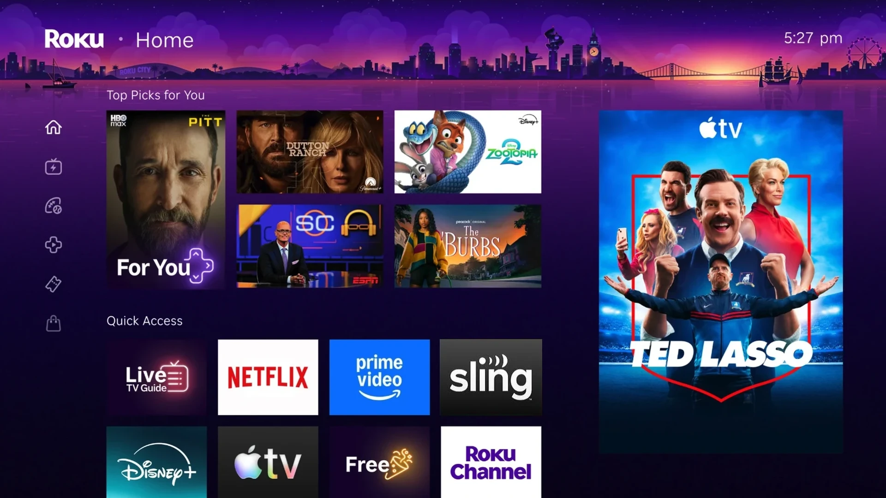
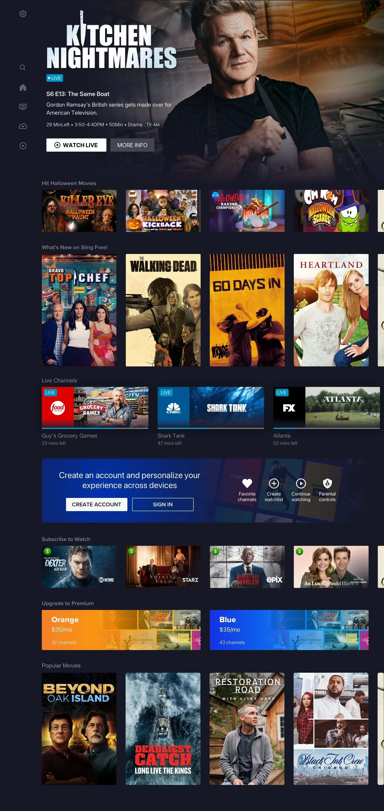
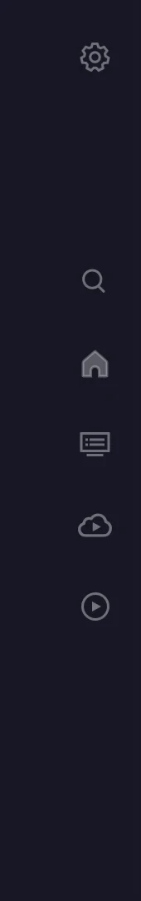
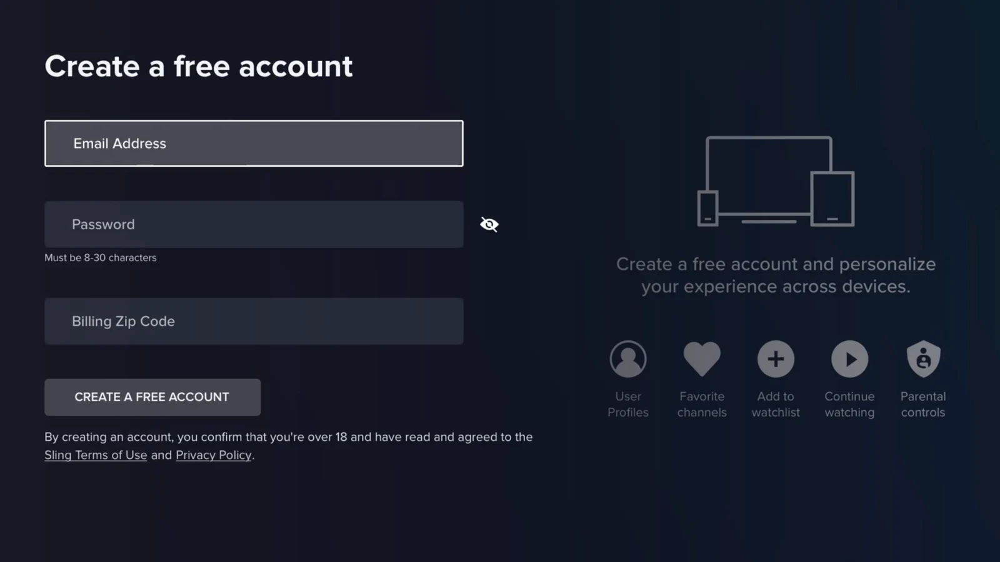
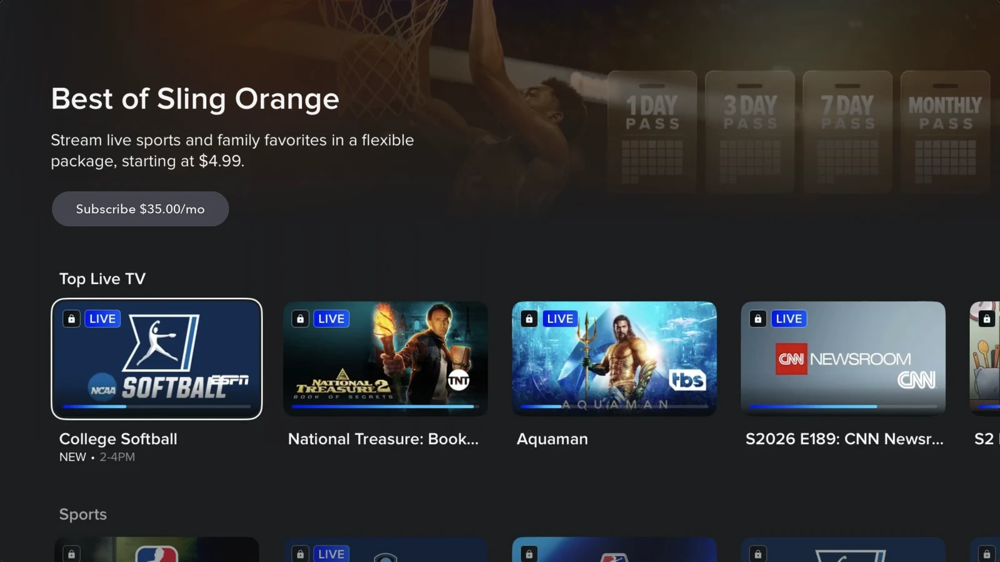
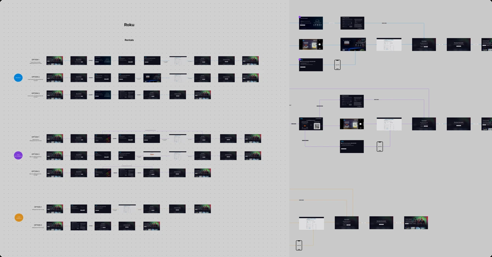
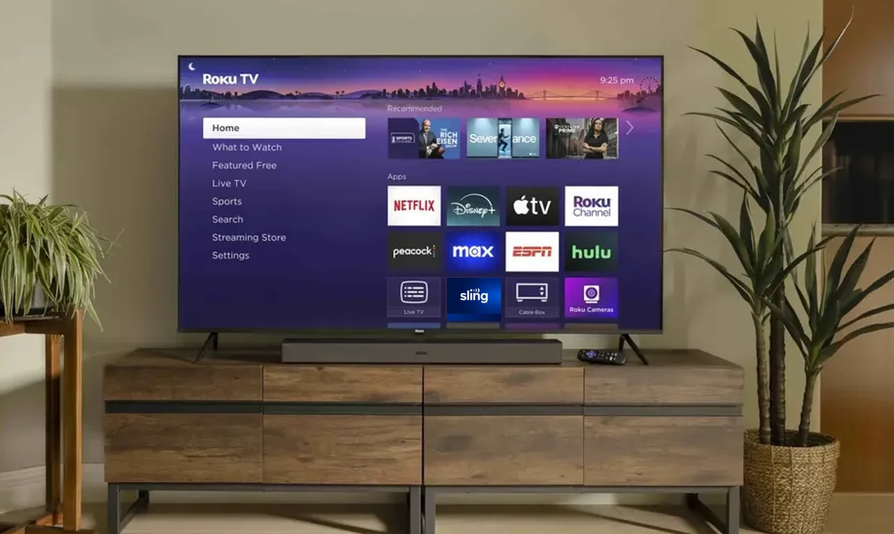
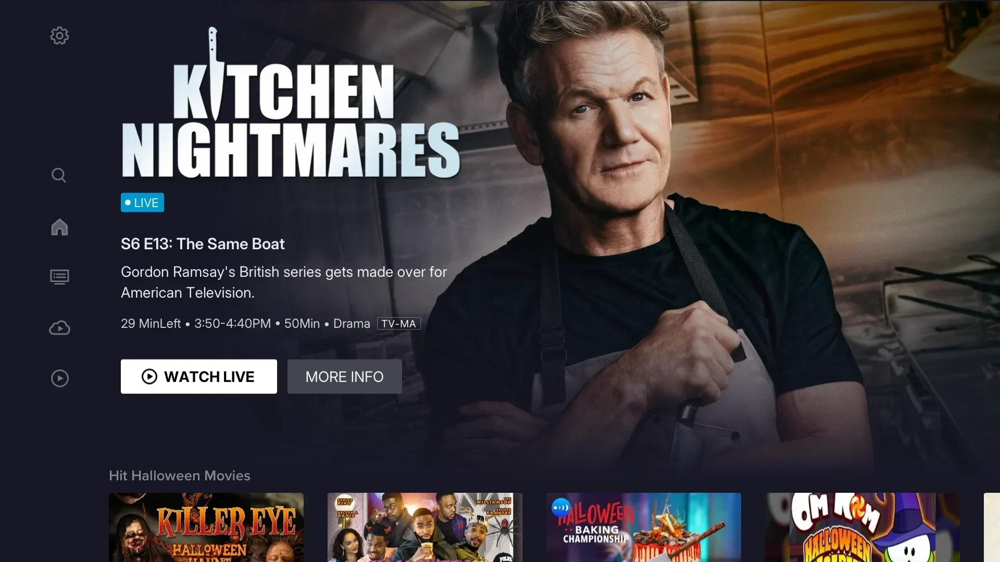

Sling Freestream
I defined and designed Sling’s free, ad-supported streaming service from the ground up, integrating free access into its existing ecosystem while protecting the paid subscription business.
Free streaming opened a new growth path for Sling.
AVOD and FAST growth opened a path to users beyond Sling’s paid subscriber base. With content and a streaming platform already in place, Sling could build a free service that expanded advertising opportunities and created a path to paid subscriptions.
Users had to sign in or sign up before watching.
Across TV, web, and mobile, the existing entry flows led users to sign in, create an account, or choose a plan before they could enter the Sling app. These upfront decisions obscured the value of Sling’s free content.


Leadership’s biggest concern was whether opening free access would cannibalize paid subscriptions.
Build a valuable free service without weakening the paid business.
I used these goals to define the service model and guide design decisions about free access, account creation, and paid upgrades.


Audience growth alone would not define success.
We paired viewing and monetization signals with guardrails against cannibalization of paid subscriptions and playback issues.
| Success signals | Metrics & target direction | |
|---|---|---|
| Access & engagement | Time to first video ↓ | Hours watched ↑ |
| Reach & advertising | Weekly active viewers ↑ | Ad opportunities ↑ |
| Free to paid | Account creation ↑ | Paid conversion ↑ |
| Guardrails | Guardrail measures | |
|---|---|---|
| Paid subscriber health | Paid engagement | Subscriber churn |
| Playback reliability | Playback success during rollout | |
The first question was not what to design.
It was what Freestream should be.
Sling wanted to expand free, ad-supported viewing, but the product model was still undefined. I needed to establish what Freestream would offer, where it would live, and how it would work alongside Sling’s paid subscriptions.
Leadership proposed a separate free app or a Free section in Sling’s main menu.
Rather than choosing between them, I reframed the question from where free should live to how each would shape access, content discovery, and the path to a paid subscription.

Reference: Amazon Freevee

Reference: Sling Free navigation concept
I compared four models, with the existing paywall as the baseline.
Alongside the separate free app and the Free section in the main menu, I proposed building free viewing into Sling. I compared all four on viewing friction, advertising opportunity, the risk of cannibalizing paid subscriptions, and implementation complexity.
| Paid only (today) | Separate free app | RECOMMENDED Free built into Sling | Free section in the main menu | |
|---|---|---|---|---|
| Examples | Sling TV (current) Netflix · Hulu | Tubi · Pluto TV Freevee (past) | Prime Video Roku Channel | Peacock Channels |
| First-watch friction | High | Low | Low | Low |
| Discovery + conversion | Limited | Fragmented | Unified | Mostly unified |
| Upsell approach | Forced early | Weaker surface | Contextual | Contextual + siloed |
| Ad reach | None | Strong | Strong | Strong |
| Risk of cannibalizing paid | Low | Medium | Managed | Managed but visible |
| IA clarity | Clear | Separate | Unified | Duplicate risk |
| Engineering cost | Low | High | Low | Medium |
| Time to ship | Fast | Medium | Fast (P0) | Medium |
| Long-term scalability | Medium | Low | High | Medium-Low |
| Final fit | Low | Medium | Highest | Not recommended |
I chose to build free viewing into Sling.
The PM and I persuaded the SVP to build free viewing into Sling. A Free section would duplicate Guide and On Demand navigation, a separate app would need more engineering time, and leadership wanted to launch quickly.
Connected discovery and conversion
Users could watch free content and discover paid options within Sling.
More complex access rules
I needed to clearly distinguish free viewing, account-based features, and paid content, while preserving existing subscribers’ access.
This choice raised three design questions.
I needed to define how free viewing, accounts, and paid subscriptions would work together across Sling’s existing experience.

To answer these questions, I mapped the affected journeys and touchpoints across Sling.
Free had to work inside the existing Sling ecosystem.
There was no blank canvas: every surface already belonged to the paid product. I mapped how free viewing would affect entry points, account requirements, first-time use, core viewing, and upgrade paths, and captured measurement gaps to turn the service model into a concrete scope of work.

The mapping turned open questions into launch priorities.
Before the mapping, every dependency felt equally important. The map clarified what had to work first, what needed validation, and what could scale later.
What had to work first?
- Access
- Sign-in (authentication)
- Playback
- Paid-content access (entitlement)
What needed validation?
- Upsell timing
- Account prompts
- Paid impact
- Free account creation vs. paid sign-up
What could scale later?
- More surfaces
- Broader packaging
- Deeper experimentation
I made the key assumptions explicit before scaling.
I paired each unproven assumption with a de-risking approach and the signals we would use to assess it during design and rollout.
| Key assumption | De-risking approach | Validation signals |
|---|---|---|
| Opening access before sign-in would lead to meaningful viewing, not just initial traffic. | Direct Browser entry and a limited Roku rollout. | Time to first video · Hours watched |
| Free viewing could create advertising and paid-conversion value without weakening subscriptions. | Contextual sign-up and upgrade prompts, assessed during staged rollout. | Ad opportunities · Paid conversion · Paid engagement · Churn |
| Free and paid access could coexist in one Sling experience across user states. | Ecosystem mapping and user-state access rules. | Delivery feasibility · Playback success |
One Sling experience had to adapt to four user states.
I defined viewing access, account requirements, and subscription prompts for each state. Users could watch free content without creating an account.
I adapted the journey to each user state.
I used a shared framework to define how users enter and use Sling. Access and prompts depended on the user’s state and the content or feature they selected. The first-time experience was included when needed, and upsell offers appeared when relevant.
Prospect
Can watch free, ad-supported content without signing in. A free account unlocks additional features; paid content requires a subscription.
Lead
Can watch free content and use account features such as favorites and watchlists. Subscription prompts appear when they select paid content.
Paid
Can watch free content and content included in their subscription. Rentals and content outside their plan require separate payment.
Former
When signed in, can use free-account features and see an option to restart their subscription.
I defined the entry experience for each user state.
I mapped what users see when they first arrive through the Freestream landing page, the Roku remote button, and the Sling TV and mobile app launch. The matrix gave UX, Product, Engineering, Ads, and Marketing a shared reference, with in-app touchpoints below.
| Touchpoint | Prospect | Lead | Paid | Former |
|---|---|---|---|---|
| Web marketing banner → Freestream landing page | Watch free · Optional account creation · Sign in | Continue to Freestream · Explore paid plans | Continue to Sling · Manage subscription | Watch free · Account access · Optional restart offer |
| Roku remote button, Sling TV and mobile app launch | Free browsing and viewing without signing in | Free-account experience · Account features | Existing subscription experience · Preserve current access | Free viewing and account features · Optional restart offer |
See the in-app touchpoints
| Touchpoint | Prospect | Lead | Paid | Former |
|---|---|---|---|---|
| Home: Banners / rails | Free content · Account-benefit banner / Create account · Clearly labeled paid options | Free content · Account features · Relevant Upgrade to Premium banner | Free and included content · Relevant add-on offers outside the current plan | Free content · Account features · Optional Restart subscription banner |
| Content detail | Free title: Watch · Save: Create account · Paid title: Show access options | Available title: Watch · Save to watchlist · Locked title: Show paid options | Free or included title: Watch · Locked title: Show the required plan, add-on, or rental offer | Available title: Watch · Locked title: Show relevant paid options, including restart where applicable |
| Player / Playback gate | Play free content · Show the required paid option for locked content | Play available content · Show the required plan, add-on, or rental offer for locked content | Play free or included content · Show paid options only when access is missing | Play available content · Show relevant paid options for locked content, including restart where applicable |
| Guide / Channel | Free channel: Watch · Paid channel: Show plan options · Favorite a channel: Create account | Free channel: Watch · Favorites available · Paid channel: Show plan options | Free or subscribed channel: Watch · Other channels: Show the required plan or add-on | Free channel: Watch · Paid channel: Restart or choose a plan |
| DVR / Recordings | Explain recording requirements · Show account and any subscription requirements before sign-up | Show DVR eligibility · Record if available; otherwise show the required plan | Eligible recordings · Storage status · Relevant DVR upgrade | Show current recording availability · Offer a plan or restart where required |
| Account / Settings | Sign in · Create free account · Account benefits | Free-account status · Profile and settings · Subscription options | Current plan · Billing · Manage subscription and add-ons | Inactive-subscription status · Account settings · Restart or choose a plan |
Users could enter Freestream from many places.
Roku, Browser, marketing pages, in-app surfaces, and account paths each carried different context, intent, and conversion potential. I mapped the flows by surface to define where viewing began, when authentication appeared, and where upgrade moments belonged.





Roku: users open Sling from the home screen or press the Sling button on the remote.
View user flows
The walkthrough shows one example. I designed flows across multiple entry points and user states, defining how users could browse, watch, create an account, and access paid content.

Monetization moments appeared after intent, not before.
Users could browse and watch free content without signing up or paying. When they wanted more, they could create a free account, subscribe, upgrade, or make a purchase.
Create a free account
Users could see the value of signing up. Accounts also gave Sling data for user analytics.
Explore Sling packages
I connected packages on Home to detail pages showing included content and subscription options.
Explore partner services
I helped users discover partner services in Sling, explore their content, and continue to the partner to subscribe.
Rent or buy a movie
I connected movies on Home to detail pages showing rental or purchase options and prices.
We launched on Roku and Browser, then expanded in stages.
We started with limited exposure to monitor free viewing, playback reliability, and paid subscriber health before expanding the rollout.
The Sling button opened a direct path to free viewing.
For users without an account, the Sling button on Roku remotes opened free browsing and viewing instead of a sign-in screen. We introduced this change to a limited group first.



Press the Sling button on the Roku remote.
Browser gave users a direct path into Freestream.
Users could start watching from the landing page without creating an account. The web also let us update messaging and entry points quickly during the rollout.

We monitored key signals as we expanded access.
We started at 1%, moved to 5%, and expanded further while monitoring viewing, playback reliability, paid subscriber health, and conversion.
Free access launched within Sling’s paid ecosystem.
Freestream expanded across platforms, connecting free viewing with optional account creation and paid offers. The results below reflect Sling’s broader business performance.
I turned an undefined opportunity into a service Sling could launch.
Working with the PM, I gained leadership support for building Freestream within the existing Sling experience. I translated that direction into access rules, user journeys, and the screens for viewing, account creation, and paid options.
The tradeoff was simpler access for users and more complexity within the product. I worked through that complexity across user states and touchpoints, keeping free viewing open while preserving existing subscribers’ access.